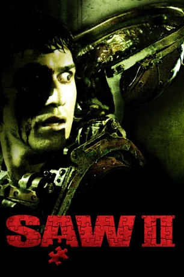

#1908 Saw 2
Alternativ: Saw II
 
 IMDB-Wertung: 6.6 / 10
IMDB-Wertung: 6.6 / 10  Metascore: 40
Metascore: 40 
Der Jigsaw-Killer hat seine Mission noch nicht beendet. Für die nächste Lektion in Sachen "Wert des Lebens" hat er bereits neue "Schüler" gefunden. Nachdem ein Mordopfer entdeckt wird, an dem Jigsaw deutlich seine Handschrift hinterlassen hat, nimmt Detective Eric Matthews seine Spur auf. Erstaunlich schnell schafft er es, ihn zu finden nur um festzustellen, dass der Fahndungserfolg Teil eines mörderischen Spiels ist. Denn das Mastermind hält acht Menschen an einem unbekannten Ort gefangen, die genau zwei Stunden Zeit haben, der Todesfalle zu entkommen, bevor das tödliche Nervengas in ihren Adern zu wirken beginnt. Hilflos muss Matthews das mörderische Spiel auf dem Monitor verfolgen. Doch damit nicht genug, unter den verängstigten Opfern entdeckt er seinen eigenen Sohn...
Jahr: 2005
Dauer: 93 Minuten
FSK: 18
Land: USA Studio: Lions Gate FilmsTonspuren:
Untertitel:
Auflösung: 720p (1280x688) Größe: 4464 MB
Genre: Horror, Krimi
Regisseur: Darren Lynn Bousman
Drehbuch: Leigh Whannell, Darren Lynn Bousman
Soundtrack: Charlie Clouser
Darsteller:
 Tobin Bell als Jigsaw / John Kramer
Tobin Bell als Jigsaw / John Kramer Shawnee Smith als Amanda Young
Shawnee Smith als Amanda Young Donnie Wahlberg als Eric Matthews
Donnie Wahlberg als Eric Matthews Erik Knudsen als Daniel Matthews
Erik Knudsen als Daniel Matthews Franky G als Xavier Chavez
Franky G als Xavier Chavez Glenn Plummer als Jonas Singer
Glenn Plummer als Jonas Singer Emmanuelle Vaugier als Addison Corday
Emmanuelle Vaugier als Addison Corday- Beverley Mitchell als Laura Hunter
- Wil Burd als Obi Tate
 Dina Meyer als Detective Allison Kerry
Dina Meyer als Detective Allison Kerry Lyriq Bent als Daniel Rigg
Lyriq Bent als Daniel Rigg- Noam Jenkins als Michael Marks
 Tony Nappo als Gus Colyard
Tony Nappo als Gus Colyard- Vincent Rother als SWAT Member Joe
- Linette Doherty als Mother in Cancer Ward
- Gretchen Helbig als Nurse in Cancer Ward
- John Fallon als Video Techie
 Ho Chow als Security Officer
Ho Chow als Security Officer Conrad Coates als Additional Voice Talent
Conrad Coates als Additional Voice Talent- James Gallanders als Additional Voice Talent
- Kelly Jones als SWAT Member Pete
- Kofi Payton als Boy in Cancer Ward
- Sam Malkin als Additional Voice Talent
- Robin Ward als Additional Voice Talent
Datei: X:\FSK18-Collections\Saw\Saw 2 (2005, FSK18, 1280x688).mkv seit 01.09.2015
Festplatte: FSK18
 Es gibt insgesamt 11 Filme in der Gruppe 'FSK18-Collections\Saw'
Es gibt insgesamt 11 Filme in der Gruppe 'FSK18-Collections\Saw'